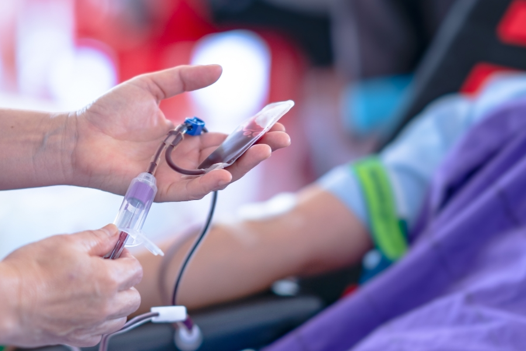

CBC (Complete Blood Count)
A CBC (Complete Blood Count) measures the amount of red blood cells,
hemoglobin (a protein found in red blood cells, which oxygen binds
to enabling them to transport oxgen around the body), the percentage
of blood made up of red blood cells, red blood cell size, the
average amount of hemoglobin the average red blood cell is carrying, the
number of white blood cells, the am of the different types of white
blood cells, and the amount of platelets in the bl All of these
counts can be greatly affected by leukemia, as leukemia is a cance
the blood. Because of this, measuring these counts can indicate
leukemia. There a few steps to a CBC. First, the blood being
examined must be collected. It is usu taken from a vein the arm.
Pressure is applied to the area with an elastic band. skin is then
disinfected, a needle is inserted, and blood is collected. The blood
sa is then examined in a lab, using equipment such as microscopes,
and automated hemato analyzer.

Blood Chemistry Test
There are various different organs that affect blood chemistry.
Measuring blood chemi allows you to estimate those organs'
well-being and functionality. If these organs are affe by leukemia,
and their function is impaired, it can affect the body's blood
chemistry. Organs regulate or effect the body's blood chemistry that
can be affected by leukemia include the l if it becomes enlarged or
inflamed, and the kidneys. Though less common, the kidneys can be
affected by leukemia, and their function can be measured using blood
chemistry tests. B chemistry tests are useful for estimating how far
the leukemia has progressed. The way b chemistry tests are done is
similar to the way CBCs are done, though they're measuring diffe
things: CBCs; blood cell counts, blood chemistry tests; blood
chemical compositions. The two tests themselves are very similar.

Cytochemistry
Diagnosing using cytochemistry, you use dyes and stains to dye and
stain tissues and structures, as well as other components, including
those in blood and bone marrow, to view the structures under a
microscope. Some types of dyes and stains are attracted to certain
chemicals present in leukemia cells, helping the diagnosis process
of leukemia go more quickly.
Immunophenotyping
Immunophenotyping is the process of analyzing specific protein
structures that come from specific cells, a few of which come
specifically come from leukemia cells. To diagnose using
immunophenotyping, you need a tissue sample, which you stain, using
"specical antibodies" with fluorescent tags. The antibodies bind to
specific proteins on a cell's surface. You then pass the sample
through a flow cytometer, which used lasers to excite the fluorescent
tags on the sample's cells. The feedback is measured, providing some
information about the sampled cells. The data can then be analyzed,
looking for abnormalities.
Cytogenetics
In cytogenetics, you look at a cell's chromosomes to look for
abnormalities or mutations. Abnormalities and mutations in a cell's
chromosomes can help to indicate leukemia or other cancers or genetic
disorders, as well as the type or subtype. In order to best analyze a
cell's chromosomes, those chromosomes need to be in their structured
and organized state, and the chromosomes need to be exposed. This
makes it ideal if the cells in the sample taken are actively dividing,
so the sample is put through a cultured state to encourage cell
division. However, in order to properly view the chromosomes, the
cells can't be allowed to complete their normal cycle of division. So,
they are put into "mitotic arrest," which sort of pauses the cell
cycle. This is usually done while the cell is in metaphase, for the
best view. Now, for the actual viewing, a process called karyotyping
is used, though there are other methods are well. The chromosomes are
stained, which helps identify individual chromosomes. The slide is
examined under a microscope, and the chromosomes are arranged in order
based on their size, shape, dyes' banding pattern, and other
properties, to create a "karyotype."
Bone Marrow Biopsy
During a bone marrow biopsy, a sample of the bone marrow is removed
and analyzed for leukemia cells. After extraction, there are different
ways to check for the presence of leukemia cells, including
microscopy, flow cytometry, cytogenetics, and other methods.

Lymph Node Biopsy
During a lymph node biopsy, either the whole, or part of the lymph
node is removed and examined to check for the presence of leukemia
cells, using various methods, including microscopy, flow cytometry,
and other methods.